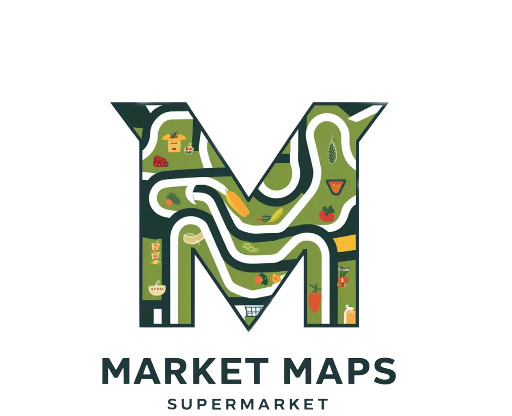

Market Maps
O projeto é destinado aos clientes de um determinado SuperMercado facilitando seus acessos com o mapeamento dele e seus produtos em um carrinho automatizado equipado com um tablet fornecendo a função de consulta e add de itens no carrinho. disponibilizando também a opções de encartes e promoções dentro do aplicativo. tudo isso armazenado em um banco de dados fornecido pelos desenvolvedores contendo suporte caso necessário.Promovendo maior agilidade de compra, e ajudando o consumidor a localizar o produto no supermercado, ou por exemplo, uma pessoa que não conhece o mercado e as sessões onde estãolocalizados os produtos.